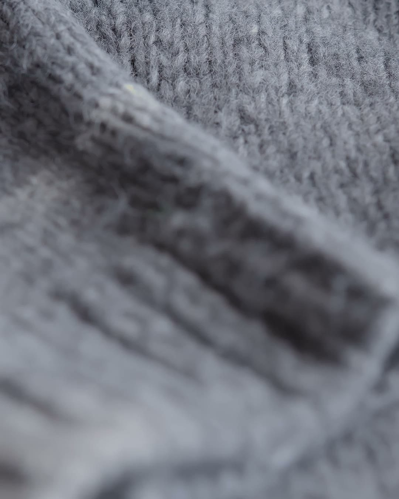
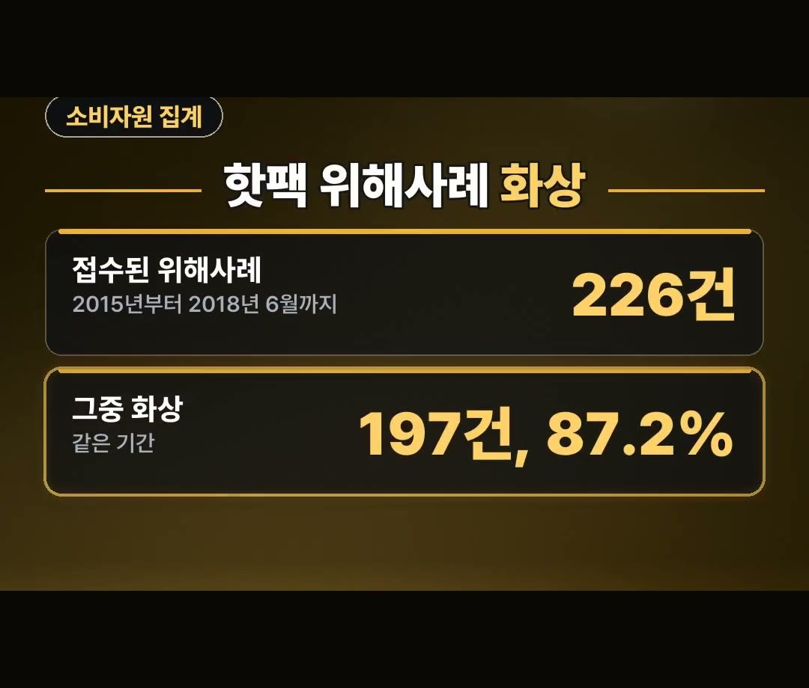
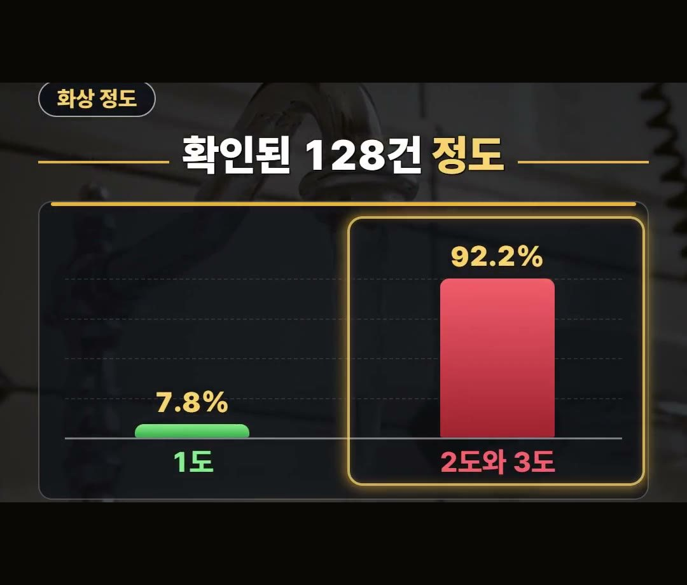

핫팩 추천 전에, 옷 위에 붙여도 2도 화상이 날 수 있는 이유 정리
※ 이 글에는 제휴 링크가 포함되어 있으며, 링크를 통해 구매하시면 일정 수수료를 받을 수 있습니다. (가격은 같습니다)
※ 이 포스팅은 선물하기 큐레이터 활동의 일환으로, 주문 발생 시 일정액의 수수료를 제공 받습니다.
※ 이 포스팅은 쿠팡 파트너스 활동의 일환으로, 이에 따른 일정액의 수수료를 제공받습니다.
※ 이 콘텐츠는 토스쇼핑 쉐어링크 활동의 일환으로, 링크를 통한 구매가 발생하면 일정 수수료를 지급받습니다.
아침저녁으로 손발이 시려 핫팩을 미리 사 둘지 고민되시죠?
핫팩은 옷 위에 붙이면 괜찮다고 생각하기 쉽지만, 한국소비자원 자료에는 면 티셔츠 위에 1시간쯤 붙였다가 2도 화상을 입은 사례도 나옵니다.
이 글에서는 소비자원 숫자로 핫팩 화상이 왜 생기는지, 살 때 어떤 표시를 보면 되는지 정리했어요.
2015년부터 2018년 6월까지 핫팩 위해사례 226건 중 화상이 197건, 87.2%였어요.
화상 정도를 확인할 수 있는 128건 중에서는 2, 3도 화상의 비율이 92.2%였으니, 옷 위라도 오래 붙여 두지 않는 것 꼭 기억하세요! 🧤

핫팩이 생각보다 뜨겁고 오래가는 이유
2018년 소비자원 자료에 따르면 핫팩은 발열이 10시간 이상 이어지고, 최고 70도까지 올라갑니다.
- 발열 시간: 10시간 이상
- 최고 온도: 70도까지
이렇게 오래 따뜻하다 보니 한곳에 오래 닿아 있으면 저온 화상이 생길 수 있어요.
핫팩은 주머니에 넣거나 옷에 붙여 두고 한동안 잊고 지내기 쉬운 물건이라, 붙여 둔 자리와 시간을 한 번씩 떠올려 보는 것이 좋아요.

2015년부터 2018년 6월까지 핫팩 위해사례 226건
한국소비자원에 접수된 핫팩 위해사례를 보면 화상이 가장 큰 비중을 차지했습니다.
- 기간: 2015년부터 2018년 6월까지
- 핫팩 위해사례: 226건
- 그중 화상: 197건, 87.2%
이 숫자는 2015년부터 2018년 6월까지 접수된 사례를 모은 것이라, 지금 한 해의 숫자처럼 읽으면 안 됩니다.
기간을 같이 기억해 두세요.

가벼운 화상보다 2, 3도 화상이 많았어요
같은 자료에서 화상 정도를 확인할 수 있는 128건만 따로 보면 결과가 이렇습니다.
- 1도 화상: 7.8%
- 2, 3도 화상: 92.2%
여기서 92.2%는 전체 사고가 아니라 화상 정도를 확인할 수 있는 128건 안에서의 비율이에요.
그래도 확인할 수 있는 화상 가운데 1도 화상은 7.8%였고, 2, 3도 화상이 92.2%였다는 점은 눈여겨볼 만합니다.
핫팩 화상은 가볍게 끝나는 경우만 있는 것이 아니라는 뜻으로 읽으시면 됩니다.

옷 위에 붙여도 화상이 난 사례
소비자원 자료에는 면 티셔츠 위에 붙이는 핫팩을 1시간쯤 붙였다가 2도 화상을 입은 사례가 실려 있습니다.
맨살이 아니라 옷 위였다는 점에서, 옷 위면 괜찮다는 생각은 조심하시는 게 좋아요.
표시도 함께 보셔야 합니다.
같은 자료에서 분말형 핫팩 20개 중 10개는 사용상 주의사항 표시가 미흡했어요.
포장에 적힌 주의사항이 빠져 있으면 어떻게 써야 안전한지 알기 어렵습니다.
핫팩 추천 전에 볼 표시 세 가지
핫팩을 고를 때 볼 점을 세 가지로 정리했습니다.
- 케이씨 마크
- 안전확인신고번호
- 주의사항 표시
그리고 쓰는 방식도 중요해요.
소비자원은 맨살과 잘 때는 피하라고 했습니다.
그래서 붙이고 잘 생각이라면 핫팩은 맞지 않아요.
반대로 출근길이나 바깥에 오래 있는 날, 옷 위에 붙이되 오래 한곳에 두지 않는 방식이라면 쓰임에 맞습니다.
참고로 상품 설명에 따르면 하루 종일 붙이는 장시간 핫팩 100개 묶음도 있다고 합니다.
정리
- 2018년 소비자원 자료에 따르면 핫팩은 발열이 10시간 이상, 최고 70도까지 올라가요.
- 2015년부터 2018년 6월까지 핫팩 위해사례 226건 중 화상이 197건, 87.2%였고, 화상 정도를 확인할 수 있는 128건 중 2, 3도 화상이 92.2%였어요.
- 살 땐 케이씨 마크·안전확인신고번호·주의사항 표시를 보고, 맨살과 잘 때는 피하세요.
링크는 아래에 모아 두었어요.
📌 2026년 10월 기준 정보예요. 가격은 시기에 따라 달라질 수 있어요.
· 동아일보·뉴스1(한국소비자원 핫팩 주의보 2018)
사진·영상사진·영상: Pexels (Angela Roma, Carmen Soler, Esra Afşar, Kampus Production, Monstera Production, Nati)